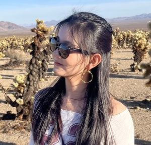
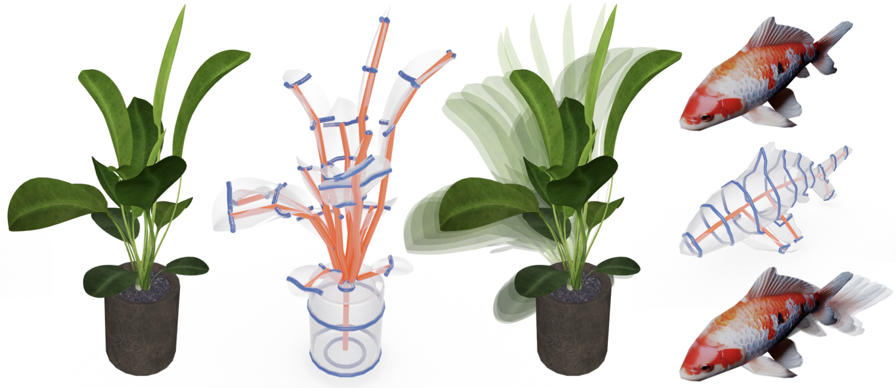
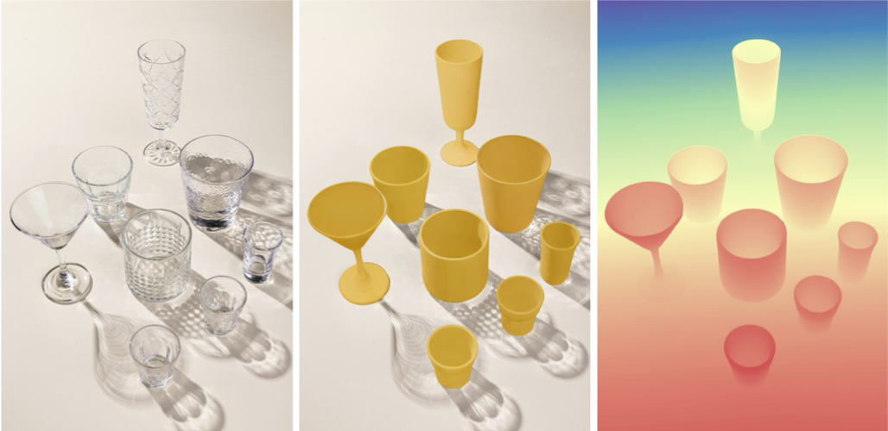

Xiaoying Wang
王筱盈
Research Assistant at the UCLA Artificial Intelligence & Visual Computing (AIVC) Lab, directed by Prof. Chenfanfu Jiang and supervised by Ying Jiang.
My research interests include computer vision and generative AI, with a focus on 2D/3D content generation, geometry deformation, and depth estimation.
Research


SeeClear: Reliable Transparent Object Depth Estimation via Generative Opacification
arXiv, 2026. * Equal contribution.
Education
M.S. Multimedia and Creative Technologies
University of Southern California, Jan. 2024 - Dec. 2025
B.Sc. Computer Science (Artificial Intelligence)
University of Nottingham Ningbo China, 2019 - 2023